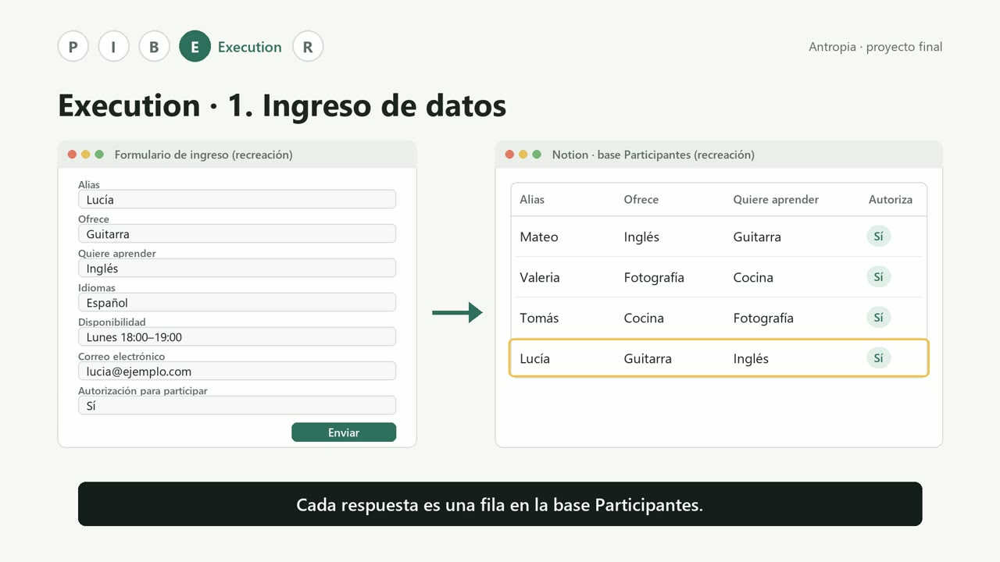
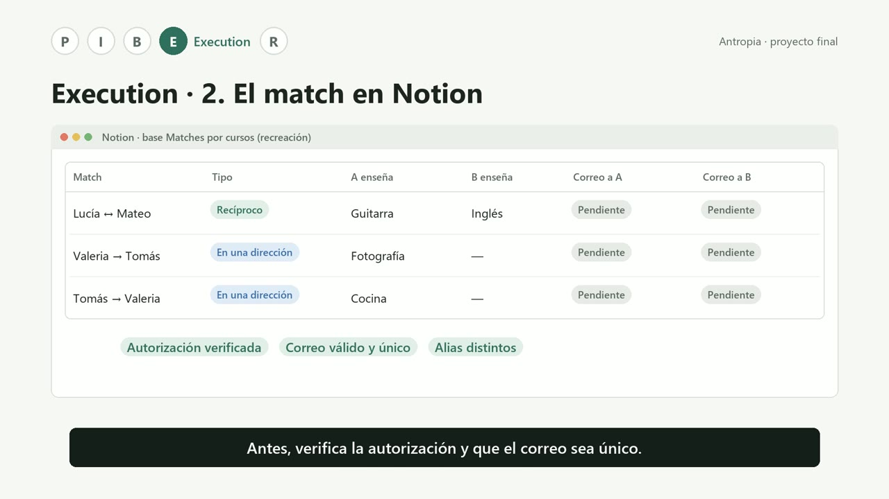
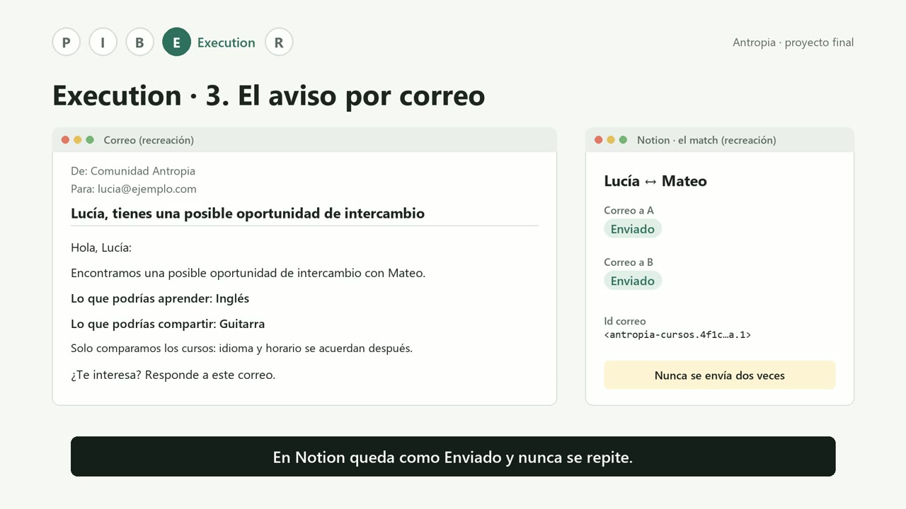

<title>Antropia</title>
<meta name="claude:viewport-fit-sides" content="cover">
<link rel="stylesheet" href="https://fonts.googleapis.com/css2?family=Space+Grotesk:wght@500;700&family=Inter:wght@400;500;600&display=swap">
<style>
/* Diseño: una sola columna de lectura; el video manda arriba, luego P·I·B·E·R como recorrido y las tres pantallas de la ejecución en filas texto + imagen. */
:root {
  --bg: #f6f7f4; --panel: #ffffff; --fg: #1d2420; --muted: #5d6a63; --line: #d7ddd8;
  --accent: #2f6f5e; --accent-soft: #e2efe9; --mark: #f2c14e; --mark-soft: #fff4d6; --ink: #16201c;
  --f-display: "Space Grotesk", "Segoe UI", system-ui, sans-serif;
  --f-body: "Inter", "Segoe UI", system-ui, sans-serif;
}
@media (prefers-color-scheme: dark) { :root:not([data-theme="light"]) {
  --bg: #121614; --panel: #1a201d; --fg: #e6ece8; --muted: #9aa8a0; --line: #2e3833;
  --accent: #6fc2a8; --accent-soft: #1f3530; --mark: #e0b84e; --mark-soft: #3a3220; --ink: #0b100e; color-scheme: dark } }
:root[data-theme="dark"] {
  --bg: #121614; --panel: #1a201d; --fg: #e6ece8; --muted: #9aa8a0; --line: #2e3833;
  --accent: #6fc2a8; --accent-soft: #1f3530; --mark: #e0b84e; --mark-soft: #3a3220; --ink: #0b100e; color-scheme: dark }

body { background: var(--bg); color: var(--fg); font-family: var(--f-body); font-size: 16px; line-height: 1.6;
  padding-left: max(16px, env(safe-area-inset-left, 0px)); padding-right: max(16px, env(safe-area-inset-right, 0px)); }
main { max-width: 1080px; margin: 0 auto; padding-block: 48px 72px; display: grid; gap: 64px; }
h1, h2, h3 { font-family: var(--f-display); margin: 0; text-wrap: balance; letter-spacing: -0.015em; }
p { margin: 0; max-width: 64ch; }
.etiqueta { font-size: 13px; font-weight: 600; letter-spacing: 0.08em; text-transform: uppercase; color: var(--accent); }

/* Portada */
.portada { display: grid; gap: 20px; }
.portada h1 { font-size: clamp(48px, 9vw, 96px); line-height: 0.95; color: var(--accent); }
.lema { font-family: var(--f-display); font-size: clamp(22px, 3vw, 30px); font-weight: 500; }
.portada p.resumen { color: var(--muted); font-size: 18px; }
.video { background: var(--ink); border-radius: 14px; overflow: hidden; border: 1px solid var(--line); }
.video video { display: block; width: 100%; height: auto; aspect-ratio: 16 / 9; }
.nota { font-size: 13px; color: var(--muted); }

/* P·I·B·E·R */
.piber { display: grid; gap: 18px; }
.piber ol { list-style: none; margin: 0; padding: 0; display: grid; grid-template-columns: repeat(5, minmax(0, 1fr)); gap: 12px; }
@media (max-width: 860px) { .piber ol { grid-template-columns: 1fr; } }
.piber li { background: var(--panel); border: 1px solid var(--line); border-radius: 12px; padding: 18px; display: grid; gap: 8px; align-content: start; min-width: 0; }
.letra { width: 40px; height: 40px; border-radius: 50%; display: grid; place-items: center; background: var(--accent); color: var(--panel);
  font-family: var(--f-display); font-weight: 700; font-size: 20px; }
.piber h3 { font-size: 18px; }
.piber li p { font-size: 15px; color: var(--muted); }

/* Ejecución */
.ejecucion { display: grid; gap: 40px; }
.cabeza { display: grid; gap: 8px; }
.cabeza h2 { font-size: clamp(28px, 4vw, 38px); }
.fila { display: grid; grid-template-columns: minmax(0, 0.9fr) minmax(0, 1.3fr); gap: 32px; align-items: center; }
@media (max-width: 860px) { .fila { grid-template-columns: 1fr; gap: 16px; } }
.fila .texto { display: grid; gap: 12px; min-width: 0; }
.fila h3 { font-size: 24px; }
.paso { font-family: var(--f-display); font-weight: 700; color: var(--accent); font-size: 15px; }
.fila ul { margin: 0; padding-left: 20px; display: grid; gap: 6px; }
.fila li::marker { color: var(--accent); }
figure { margin: 0; display: grid; gap: 8px; }
figure img { width: 100%; height: auto; border-radius: 12px; border: 1px solid var(--line); display: block; }
figcaption { font-size: 13px; color: var(--muted); }
.campo { font-weight: 600; background: var(--accent-soft); color: var(--accent); padding: 0 6px; border-radius: 4px; white-space: nowrap; }

/* Resultados */
.resultados { display: grid; gap: 18px; }
.cifras { display: grid; grid-template-columns: repeat(4, minmax(0, 1fr)); gap: 12px; }
@media (max-width: 760px) { .cifras { grid-template-columns: repeat(2, minmax(0, 1fr)); } }
.cifra { background: var(--panel); border: 1px solid var(--line); border-radius: 12px; padding: 20px; display: grid; gap: 4px; }
.cifra b { font-family: var(--f-display); font-size: clamp(40px, 6vw, 58px); line-height: 1; color: var(--accent); font-variant-numeric: tabular-nums; }
.cifra span { font-weight: 600; }
.cifra small { color: var(--muted); font-size: 14px; }

/* Por dentro */
.dentro { display: grid; gap: 18px; }
.piezas { display: grid; grid-template-columns: repeat(2, minmax(0, 1fr)); gap: 12px; }
@media (max-width: 760px) { .piezas { grid-template-columns: 1fr; } }
.pieza { border-left: 3px solid var(--accent); padding: 4px 0 4px 16px; display: grid; gap: 4px; }
.pieza h3 { font-size: 17px; }
.pieza p { color: var(--muted); font-size: 15px; }
.privacidad { background: var(--mark-soft); border-radius: 12px; padding: 18px 20px; display: grid; gap: 6px; }
.privacidad h3 { font-size: 17px; }
footer { border-top: 1px solid var(--line); padding-top: 20px; color: var(--muted); font-size: 14px; display: grid; gap: 4px; }
</style>

<main>
  <header class="portada">
    <span class="etiqueta">Proyecto final · Intercambio de conocimiento</span>
    <h1>Antropia</h1>
    <p class="lema">Comparte lo que sabes, aprende lo que sueñas.</p>
    <p class="resumen">Un agente que lee el formulario de ingreso en Notion, encuentra a personas cuyos cursos coinciden y les avisa por correo, una sola vez y cuidando su privacidad.</p>
    <div class="video">
      <video controls preload="metadata" poster="portada.jpg" src="antropia_pitch.mp4"></video>
    </div>
    <p class="nota">Video de 1 min 19 s, con narración y subtítulos. Las personas y los datos que aparecen son ficticios.</p>
  </header>

  <section class="piber" aria-labelledby="t-piber">
    <span class="etiqueta" id="t-piber">El proyecto en cinco pasos</span>
    <ol>
      <li><span class="letra">P</span><h3>Problema</h3><p>Mucha gente sabe algo que otra quiere aprender, pero no se encuentran. Emparejarlas a mano es lento.</p></li>
      <li><span class="letra">I</span><h3>Insight</h3><p>El formulario ya guarda lo que cada persona ofrece y lo que quiere aprender. Solo falta cruzarlo.</p></li>
      <li><span class="letra">B</span><h3>Big Idea</h3><p>Un agente que encuentra coincidencias de cursos y avisa a cada persona por correo.</p></li>
      <li><span class="letra">E</span><h3>Execution</h3><p>Formulario en Notion, match en una base de Notion y aviso con una plantilla de correo.</p></li>
      <li><span class="letra">R</span><h3>Results</h3><p>Tres matches en el piloto, seis correos listos y ningún duplicado posible.</p></li>
    </ol>
  </section>

  <section class="ejecucion" aria-labelledby="t-ejecucion">
    <div class="cabeza">
      <span class="etiqueta">Execution</span>
      <h2 id="t-ejecucion">Cómo funciona, de la inscripción al aviso</h2>
    </div>

    <div class="fila">
      <div class="texto">
        <span class="paso">1 · Ingreso de datos</span>
        <h3>Todo empieza con el formulario de Notion</h3>
        <p>Cada persona se inscribe en un formulario de Notion. Indica lo que puede enseñar, lo que quiere aprender y cómo contactarla.</p>
        <ul>
          <li><span class="campo">Ofrece</span> y <span class="campo">Quiere aprender</span>: hasta siete temas, uno por línea.</li>
          <li>Idiomas, días y franjas disponibles, zona horaria y minutos para enseñar.</li>
          <li><span class="campo">Correo electrónico</span> y <span class="campo">Autorización para participar</span>.</li>
        </ul>
        <p>Cada respuesta se guarda como una fila en la base <b>Participantes</b>.</p>
      </div>
      <figure>
        
        <figcaption>Recreación con personas ficticias.</figcaption>
      </figure>
    </div>

    <div class="fila">
      <div class="texto">
        <span class="paso">2 · El match en Notion</span>
        <h3>Cada coincidencia queda a la vista en una base</h3>
        <p>El agente compara los cursos de todas las personas y registra cada match en la base <b>Matches por cursos</b>.</p>
        <ul>
          <li><span class="campo">Tipo</span>: recíproco, si cada persona enseña algo a la otra, o en una dirección.</li>
          <li><span class="campo">A enseña</span> y <span class="campo">B enseña</span>: los cursos que coinciden.</li>
          <li><span class="campo">Correo a A</span> y <span class="campo">Correo a B</span>: si el aviso está pendiente o ya se envió.</li>
        </ul>
        <p>Antes de escribir, comprueba la autorización, que el correo sea válido y único, y que no sean dos fichas de la misma persona.</p>
      </div>
      <figure>
        
        <figcaption>Recreación con personas ficticias.</figcaption>
      </figure>
    </div>

    <div class="fila">
      <div class="texto">
        <span class="paso">3 · El aviso por correo</span>
        <h3>Una posibilidad, no un encuentro confirmado</h3>
        <p>Cada persona recibe un correo con la plantilla del proyecto. Cuenta qué podría aprender y qué podría compartir.</p>
        <ul>
          <li>De la otra persona solo comparte el alias y los cursos.</li>
          <li>Aclara que el idioma, el horario y la duración todavía se tienen que acordar.</li>
          <li>Cada correo se envía una sola vez. En Notion queda como <span class="campo">Enviado</span>.</li>
        </ul>
      </div>
      <figure>
        
        <figcaption>Recreación con personas ficticias.</figcaption>
      </figure>
    </div>
  </section>

  <section class="resultados" aria-labelledby="t-resultados">
    <span class="etiqueta" id="t-resultados">Results · piloto</span>
    <div class="cifras">
      <div class="cifra"><b>3</b><span>matches detectados</span><small>1 recíproco y 2 en una dirección</small></div>
      <div class="cifra"><b>6</b><span>correos listos</span><small>uno para cada persona de cada match</small></div>
      <div class="cifra"><b>0</b><span>duplicados</span><small>un registro de envíos lo impide</small></div>
      <div class="cifra"><b>599</b><span>pruebas automáticas</span><small>con datos ficticios, sin conexión</small></div>
    </div>
  </section>

  <section class="dentro" aria-labelledby="t-dentro">
    <span class="etiqueta" id="t-dentro">Por dentro</span>
    <div class="piezas">
      <div class="pieza"><h3>Notion</h3><p>Formulario de ingreso, base Participantes, base Matches por cursos y la plantilla del correo.</p></div>
      <div class="pieza"><h3>Agente en Python</h3><p>Lee las respuestas, compara los cursos, registra cada match y redacta los correos.</p></div>
      <div class="pieza"><h3>GitHub Actions</h3><p>Ejecuta el agente cada hora, con una sola ejecución a la vez, y nunca repite un envío.</p></div>
      <div class="pieza"><h3>Gmail</h3><p>Envía los avisos desde la cuenta de la comunidad. Las contraseñas se guardan como secretos, nunca en el código.</p></div>
    </div>
    <div class="privacidad">
      <h3>Privacidad desde el diseño</h3>
      <p>Solo participan personas que lo autorizan. Nadie recibe el correo ni los datos personales de otra persona. Si hay duda sobre un envío, no se reintenta solo: lo revisa una persona.</p>
    </div>
  </section>

  <footer>
    <span>Antropia · Comparte lo que sabes, aprende lo que sueñas.</span>
    <span>Las pantallas de esta página y del video son recreaciones con personas y datos ficticios.</span>
  </footer>
</main>
